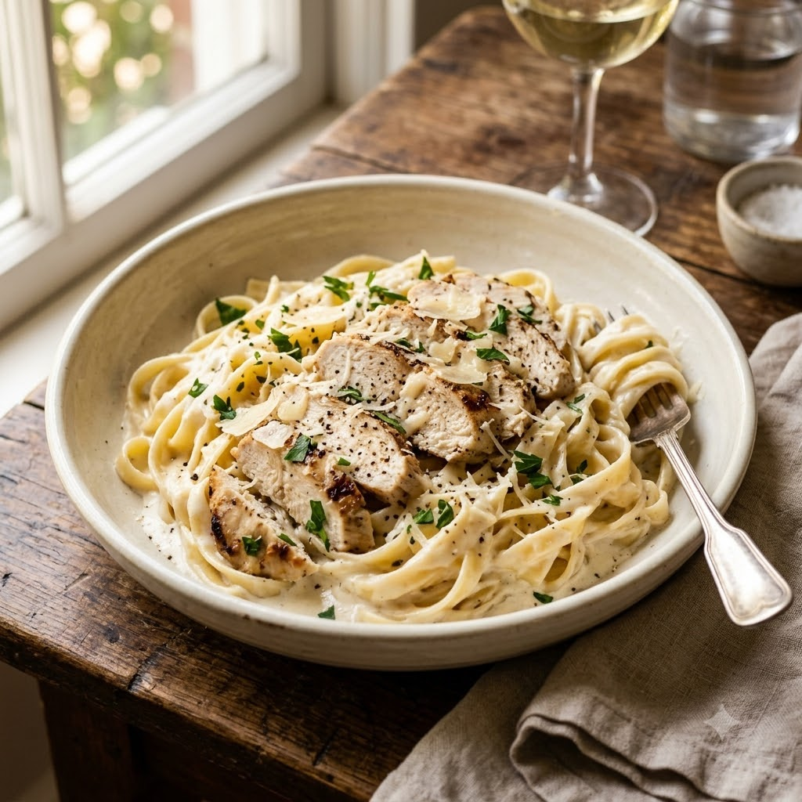

Airfryer (Grill chicken) → Chef Magic (Boil pasta + Make sauce) 190°C Grill 14 min + Boil 11 min + Sauce 8 min — Serves 3
Prep ahead: Slice the chicken only after it rests for a couple of minutes off the heat — it stays juicier and slices more cleanly.
Ingredients
Method
Tip: The sauce will look thin at first but keeps thickening off the heat as the Parmesan sets — don't over-reduce it in the jar.